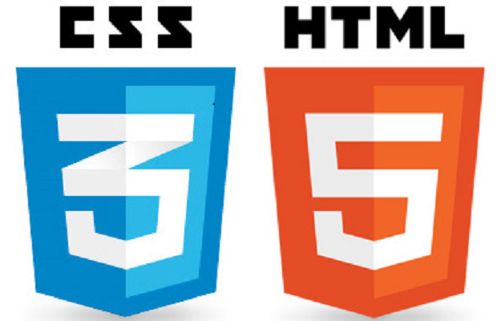

LYO'da Maker derslerinin ilk gününde HTML ve CSS dillerine giriş yaptık. İlk önce HTML için gerekli temel etiketleri öğrendik. Daha sonra "Brackets" adlı program üzerinden basit bir yemek tarifi sitesi yazmaya başladık. HTMl kodumuzu bitirdikten sonra, sitemizin görünümünü geliştirmek için CSS'e giriş yaptık. Bunun için önce HTML kodumuzda "class" ve "div" oluşturmayı öğrendik. Daha sonra da CSS'i kullanarak yazı tipini, ve genel görünüşü değiştirdik.
